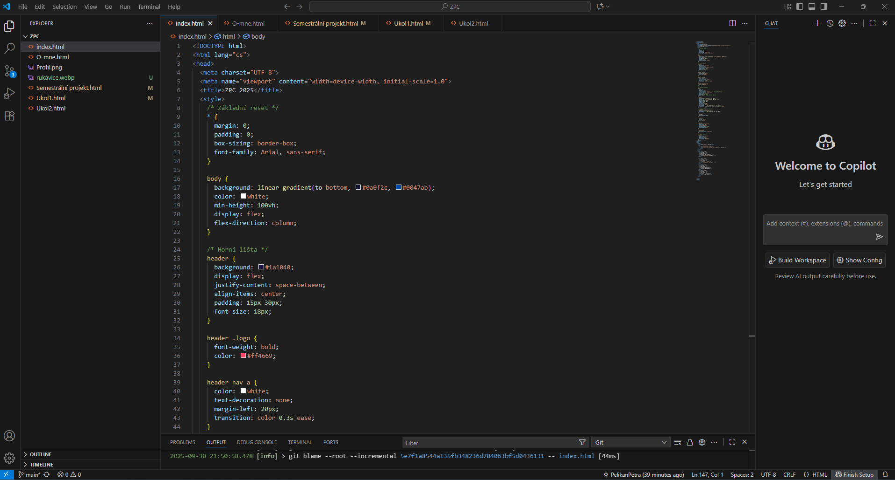

×
Tvorba Webového Portfolia
Cíl a shrnutí
V rámci tohoto úvodního projektu bylo vytvořeno vlastní webové portfolio. Hlavním smyslem bylo praktické osvojení klíčových principů webového vývoje a celého procesu online publikování. Web zároveň posloužil jako přehledná dokumentace práce na jednotlivých úkolech a finálním projektu.
Struktura webu
Struktura webu byla rozdělena do několika logických částí:
- Domovská stránka: Zde byl poskytnut souhrnný pohled na portfolio.
- O mně: V této sekci byla stručně představena osoba autora a jeho motivace.
- Projekty a úkoly: Byly zde zaznamenány detailní popisy použitých metod, pracovních postupů a dosažených výsledků.
- Závěrečný projekt: Byl vytvořen speciální příspěvek, který rekapituloval kompletní proces tvorby, nejdůležitější zjištění a finální řešení.
Použité technologie a přínos
Při tvorbě byly využívány standardní vývojářské nástroje. Kód byl psán v editoru Visual Studio Code a pro správu souborů a závislostí byl použit příkazový řádek. Pro správu verzí a následné zveřejnění webu byla využita platforma GitHub.
Tímto projektem byl získán cenný základ a došlo k seznámení s pracovními postupy, na které bylo možné navázat v budoucích zadáních.
